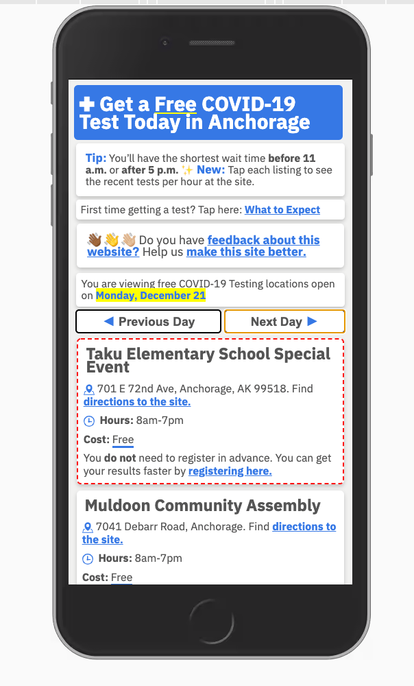
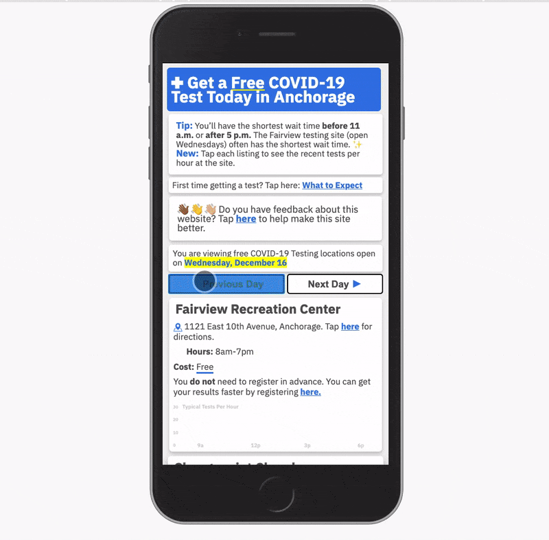
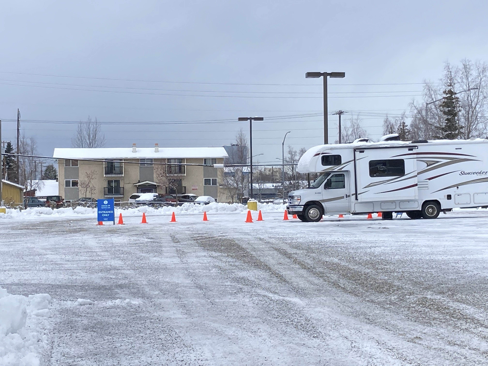
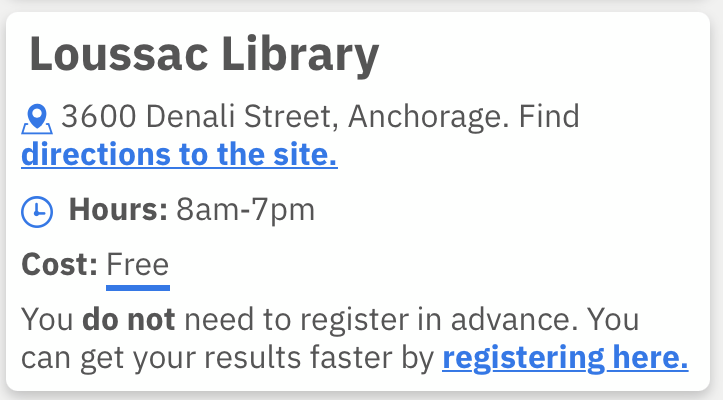
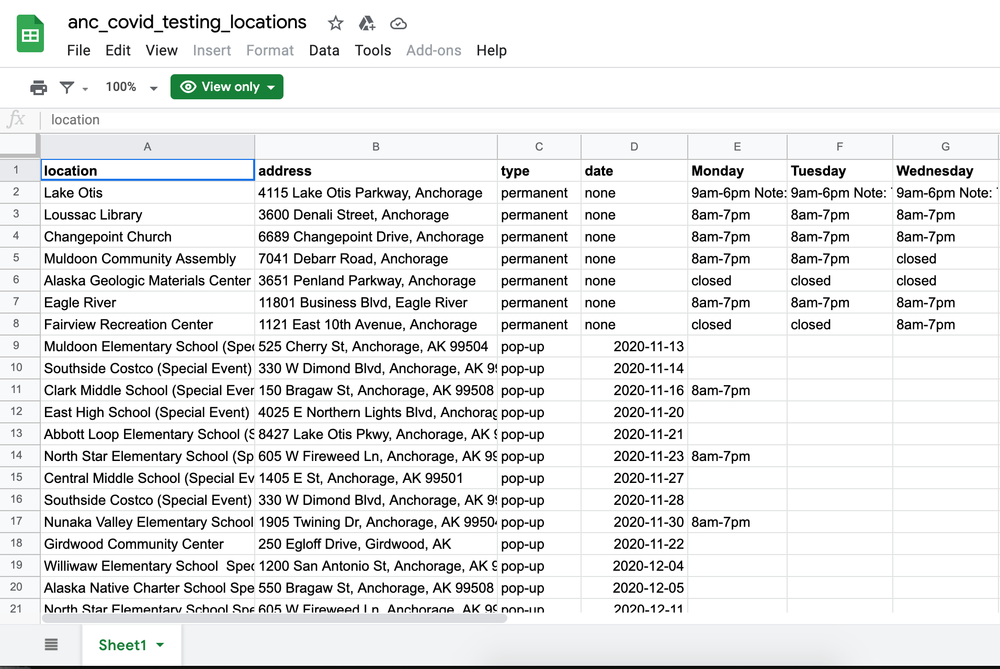
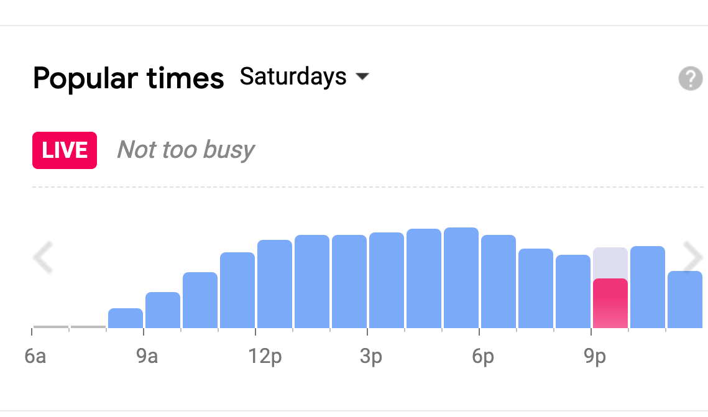
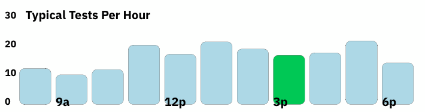
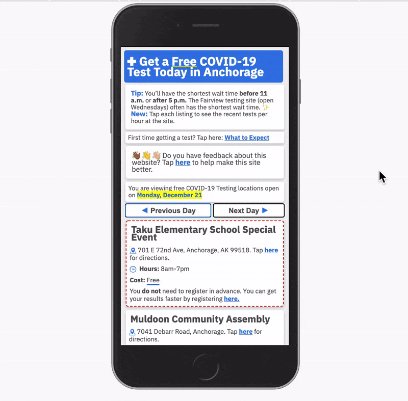
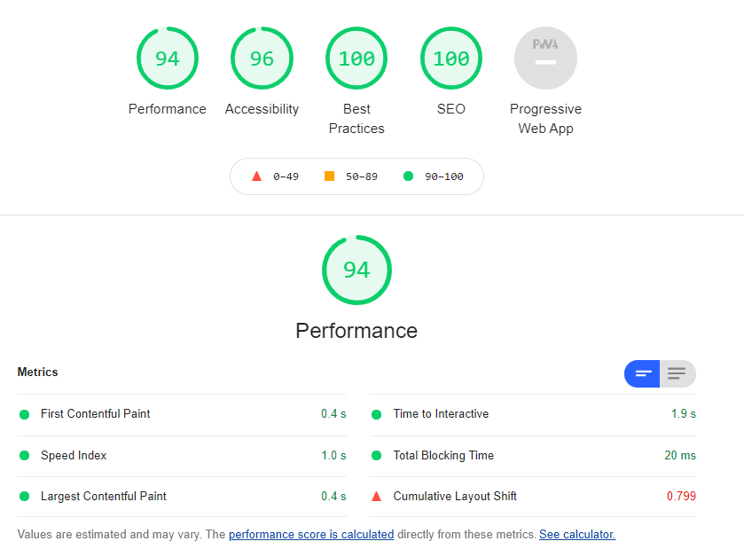

AnchorageCovidTesting.org Website
As part of a test and trace COVID-19 strategy, the Municipality of Anchorage set up a system of ~six COVID-19 testing sites in 2020 to give residents access to free and safe testing. In my work for the Anchorage Innovation Team, I worked with public health officials to help people get access to this testing.
**TL:DR, we made a lightwight, mobile-first website to connect people to free COVID-19 testing. Check out the live site, which is active at least as of the end of December, 2020.
While it was very tempting to build a map as the main interface (and the state of Alaska did) we held back and tried to focus on a much more focused question:
“Where can I get a free COVID-19 test today (or tomorrow~ish)?
Here’s what we had in December:
 This was to be a lightning fast, somewhat barebones site that tells you: here’s a few spots you can go. Not which one is closest to you. We thought of that as a seperate probelem, so for locations, we simply linked to the Google Maps listing for each location. We’re not going to build a better map or routing engine than Google, so this helps people use a tool that they already do. Making people navigate a complex ESRI map is unecessary and in my opinion adds more complexity than it does orient people to resources.
This task is more about reducing complexity and friction costs that surround a not-fun task. The cognitive load of coronavirus is already large before someone gets a test.
- Have I been exposed?
- What does my extended bubble look like?
- Am I asymptomatic?
- What if I have been exposed, by my viral load is too small at the moment to detect?
- How much does this cost? and how much will it hurt?
COVID-19 testing should have as little friction as possible.
The size of the menu was about right: there are between one and six sites open each day. We’re not dealing with several dozen like New York.
The primary axis of the site is time, rather than location. The only real UI interactive elements are big buttons for Previous Day and Next Day.

We didn’t build out a full calendar or get into appointments or anything like that. And while there are a lot more options to get a COVID-19 test, such as many primary care clinics and rapid antigen testing, the city-funded sites help simplify the selection process for residents. They’re free, open to all, and allow drive-through or walk-up access.

This is what the Fairview testing site looked like in November. It’s basically an RV that you drive or walk up to.
One other choice we/I made is to demphasize the pre-registration process. The test vendors' online registration process is unweildly and not entirely necessary. So we tell people that, in fewer words.

Google Sheets as a CMS #
The initial version of this site during the end summer of 2020 was mostly vanilla javascript. It was a very very soft launch. Because testing sites ran on a consistent weekly schedule, I hardcoded that into the site to show the right test sites on the right days. But as the pandemic grew and the testing regime added in new complexity, such as pop-up testing sites at schoosl and shopping areas, the site needed a more nimble way to keep it up to date. And preferrably by not me.
I made a Google sheet that allowed for a shifting schedule of recurring and pop-up testing sites. The Google Sheets API will output a JSON file that you can hit. The site reads the JSON. It’s easy to update and amazingly has not broken.

What I wanted to do is make html out of some data that is subject to change. This seems like a good use case for React. And the React is pretty dead simple. I have a “location” component that reads the data from the sheet and builds a little div with the information about the testing site. It’s great to have new html elements render on the fly based on the ever-changing schedule.
Busyness Indicators #
We received a lot of requests for the expected wait times for each site. While we have not been able to get a regular update from the testing sites (they are busy collecting samples), we have one current dataset that would make something possible. I drew direct inspriation from the Google Maps “Popular Times” feature. 
We don’t have cell phone data like Google does, (thank god) but we do have a proxy that would work. I have a seperate ongoing project tracking the test turnaround times (the goal of the Emergency Operation Centers is to have tests results back in less than 72 hours). The dataset that powers that analysis has granular collection data, down to the minute. With this, I was able to summarize the number of tests collected per hour at each site over the most recent several days.

The green bar highlights the current hour of the day, based on whatever the system time is. The barchart definitely does not need to be animated, but it is animated. In action here:

The site definitely is minimalist, but it’s made for speed and one purpose - figure out when and where to get a free COVID-19 test. We’ve tried to maximize the speed and tested constantly throughout the updates.

Mobile and tablet traffic is consistently about 2/3rds of the traffic, and the page is designed to make the most of a mobile phone screen and be lightweight. Desktop is much less optimized, but it works the same.
Many official websites, while rich with data, are poorly designed for mobile devices and are a bit heavy. While there are still several spots to trim, this loads fast for phones and those with a marginal connection.